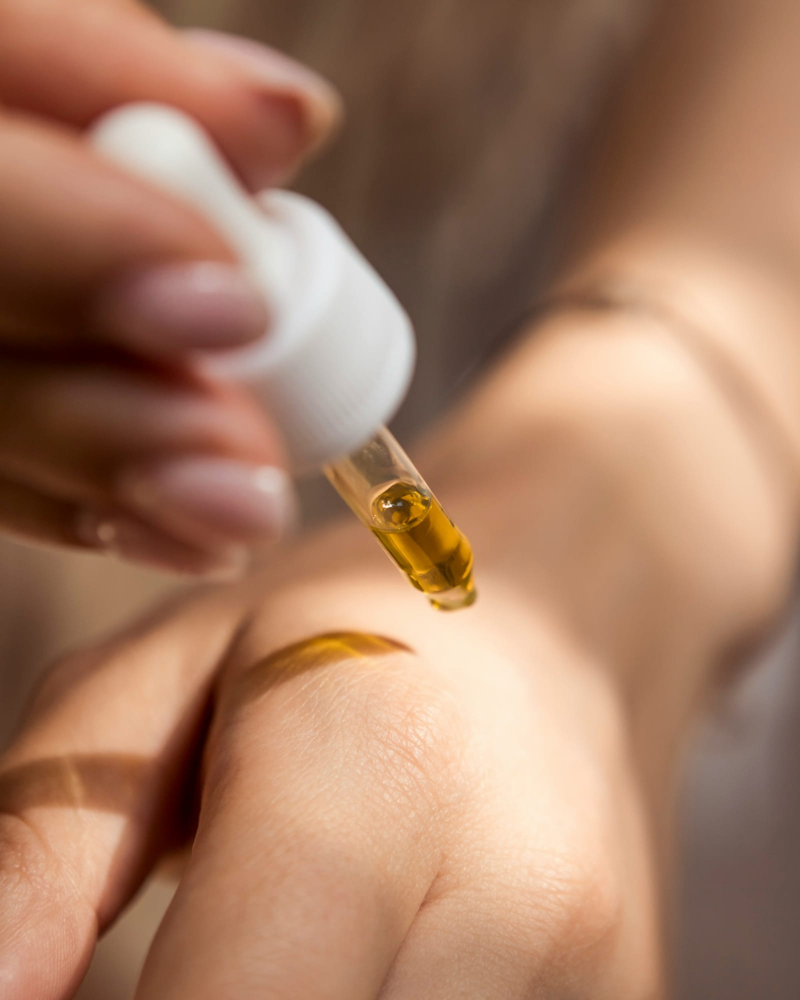

Evidence, not trends
Every Juvenne protocol stands on peer-reviewed science. Here is a selection of the work that shapes how we think — and how we treat.
Willis & Todorov · Psychological Science · 2006
A tenth of a second of looking at a face is enough for people to form judgements of attractiveness, trustworthiness, and competence — and longer exposure mostly just increases confidence in that first snap judgement. Your first appearance really is decided in an instant.
Psychology of BeautyDion, Berscheid & Walster · Journal of Personality and Social Psychology · 1972
The classic study of the “halo effect”: people spontaneously attribute more positive personality traits and better life outcomes to attractive individuals. A foundational result for understanding why presentation shapes opportunity.
Psychology of BeautyLanglois et al. · Psychological Bulletin · 2000
A meta-analysis of hundreds of studies confirming that attractive people are judged and treated more positively than unattractive people — even by those who know them. Beauty effects are real, robust, and pancultural.
Economics of AppearanceHamermesh & Biddle · American Economic Review · 1994
Economists document a measurable “beauty premium”: better-looking people earn more, and the penalty for plainness appears across occupations. Looking after your appearance is not vanity — it is an investment with quantifiable returns.
CommunicationTodorov et al. · Science · 2005
Split-second judgements of competence, made purely from candidates' faces, predicted real election results. What your face communicates before you say a word can decide outcomes at the highest stakes.
Proksch, Brandner & Jensen · Experimental Dermatology · 2008
Skin is the body's largest organ and its first line of defence — a living barrier that regulates water loss, blocks pathogens, and repairs itself constantly. Understanding barrier function is the starting point of every serious skincare protocol.
Skin & PerceptionFink, Grammer & Matts · Evolution and Human Behavior · 2006
Independent of facial shape, the evenness of skin tone alone changes how old, healthy, and attractive a face is judged to be. Skin quality is not a detail — it is a primary signal the eye reads.
Skin AgeingRittié & Fisher · Cold Spring Harbor Perspectives in Medicine · 2015
A rigorous review separating intrinsic ageing from photoageing — and showing how much of visible skin ageing is driven by sun exposure, and therefore preventable. The case for protection and early, evidence-based intervention.
Clinical EstheticsGanceviciene et al. · Dermato-Endocrinology · 2012
A clinical overview of what actually works against skin ageing — from topical retinoids and antioxidants to peels and procedural interventions. The evidence base behind the treatment menu, separated from marketing.
CommunicationEtcoff et al. · PLoS ONE · 2011
Subtle, professional enhancement of the face measurably increases perceived likability, trustworthiness, and competence. Cared-for skin and considered presentation function as communication — they change how you are received.
Links open the original publications. Juvenne is not affiliated with the authors; we simply build on their work.
“Skin is the body's largest organ. Treating it well is not a luxury — it is evidence-based self-care.”The Juvenne Standard